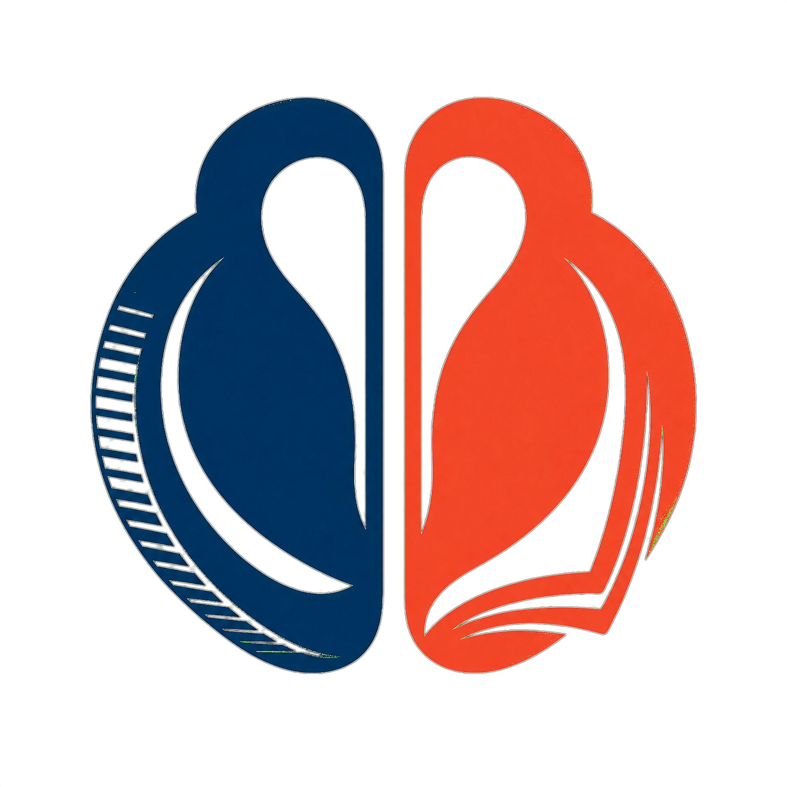
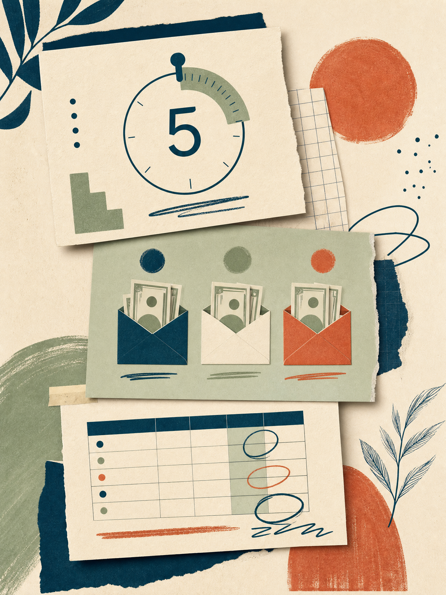

A pausa de 5 segundos
O gatilho simples para evitar aquela compra que você se arrepende depois.

A MenteUm guia sobre dinheiro e comportamento
Um ebook direto, sem economês e sem culpa, para entender por que você gasta — e construir uma vida financeira que não desmorona no fim do mês.
Não é sobre cortar tudo.
É sobre se entender.
A história por trás do método
Eu tinha um salário até bom. Mesmo assim, chegava no fim do mês olhando a conta do banco e pensando: “pra onde foi que meu dinheiro foi parar?”
Baixei aplicativos, anotei gastos, cortei o café da manhã na padaria. Funcionava por algumas semanas — até os velhos hábitos voltarem.
Foi quando entendi que o problema não era só quanto entrava. Era o que acontecia na minha cabeça antes de gastar.
Leia a
O que ninguém ensinaUm método para a vida real
Nada de dicas genéricas que ignoram sua rotina. Você vai entender seus gatilhos, criar defesas e fazer o dinheiro trabalhar a seu favor — mesmo começando pequeno.
O gatilho simples para evitar aquela compra que você se arrepende depois.
Um jeito diferente de organizar o mês, mesmo com muitas contas.
Como lidar com a ansiedade de comprar quando você está triste ou estressado.
Um acompanhamento diário para finalmente enxergar para onde seu dinheiro vai.
A consequência é financeira. A mudança é pessoal.
Vai parar de lutar contra quem você é e começar a construir pequenas decisões que cabem na sua realidade. Foi assim que eu juntei minha primeira reserva, quitei minhas dívidas e comecei a investir todo mês.
Quero esse passo a passo ↗Oferta de lançamento
O ebook completo, a planilha e dois extras para você sair da intenção e entrar em movimento.
pagamento único
Antes de tomar sua decisão
Se a sua pergunta não estiver aqui, escreva para oi@amentedomilhao.com.br.
Não. O método foi pensado para funcionar com qualquer salário, inclusive quando há muitas contas para pagar. A proposta é entender seus padrões e separar o dinheiro de um jeito que faça sentido para sua realidade.
Sim — e também para quem ganha bem, mas termina o mês sem saber para onde o dinheiro foi. O conteúdo começa pelo comportamento e ajuda a construir decisões mais conscientes antes de falar em investir.
Você pode começar no mesmo dia. Há uma técnica de 5 segundos para compras por impulso e uma planilha simples para acompanhar os gastos sem transformar sua vida em uma aula de contabilidade.
Você compra, lê e aplica as técnicas. Se em 7 dias sentir que nada mudou, pode solicitar a devolução do investimento, sem burocracia desnecessária.
Além do ebook, você recebe a planilha de acompanhamento, acesso a um grupo no WhatsApp para tirar dúvidas e um mini curso em vídeo com os primeiros passos nos investimentos.
Sua próxima decisão pode ser diferente
Comece pela parte que realmente muda tudo: a sua mente.
Quero começar agora ↗